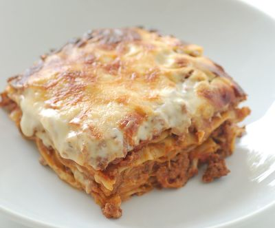

Lasagne

Beskrivelse
Lasagne er en klassiker som de fleste liker! Ovnsretten består av kjøttsaus og ostesaus som legges lagvis med pastaplater. Denne oppskriften er til 4 porsjoner.
Ingredienser
Kjøttsaus
- 400g Kjøttdeig
- 2 ss olje til steking
- 1 stk. hakket løk
- 2 båter finhakket hvitløk
- 1 boks hakkede hermetiske tomater (400 g)
- 2 ss tomatpuré
- ca. 1 dl vann
- 1 ss frisk basilikum
- 0,5 ts salt
- 0,5 ts pepper
- 9 stk. lasagneplater
- 3 dl revet hvitost til toppen
Ostesaus
- 2 ss smør
- 3 ss hvetemel
- 6 dl melk
- 5 ss revet parmesan eller annen hvit ost
- 1 ts salt
- 0,5 ts malt hvit pepper
- 0,5 ts revet muskatnøtt
Oppskrift
- Brun kjøttdeig i olje på sterk varme i to omganger. Ha all kjøttdeigen tilbake i stekepanna. Tilsett hakket løk, hvitløk, tomater, tomatpuré og vann. La kjøttsausen småkoke i ca. 10 minutter til den begynner å tykne. Dryss over basilikum. Smak til med salt og pepper.
- Smelt smør i en kjele og rør inn mel. Spe med melk under omrøring og la sausen koke i ca. 10 minutter. Den skal være forholdsvis tykk. Ha i parmesan og la osten smelte. Smak til ostesausen med krydder.
- Legg lasagneplater, kjøttsaus og ostesaus lagvis i en ildfast form. Start og avslutt med ostesaus. Dryss over revet ost til slutt.
- Sett formen i stekeovn på 225° C og stek i 30-40 minutter. Kjenn etter med en pinne eller spiss kniv om pastaen er mør. La lasagnen hvile noen minutter før servering.
Server gjerne med baguette og salat ved siden av.
I stedet for vanlig kjøttdeig kan du gjerne bruke magrere kjøttdeig som inneholder under 10 prosent fett, karbonadedeig, kyllingkjøttdeig eller kjøttdeig av svin.